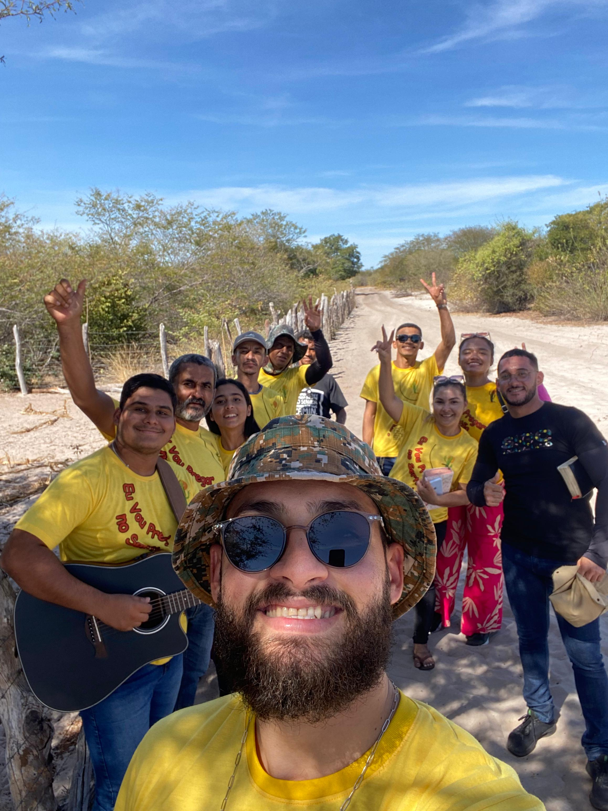
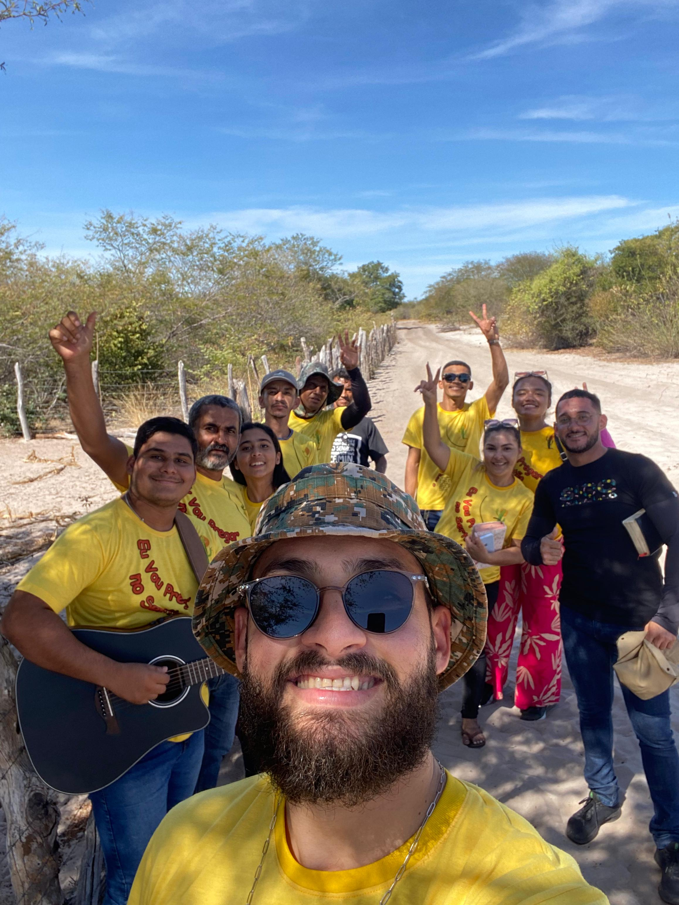
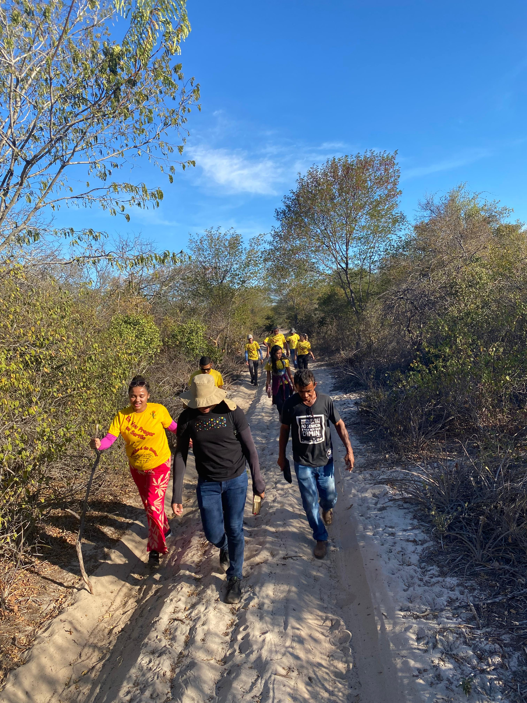
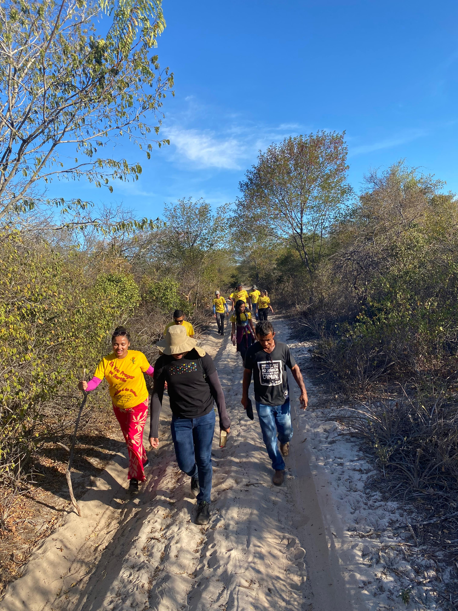

Missão Ide ao Sertão

A Missão Ide ao Sertão nasceu do chamado de Cristo, que nos deu a ordenança: "Ide e pregai o Evangelho a toda criatura". Nosso propósito é responder a esse mandamento, levando a mensagem de salvação de Jesus às comunidades do sertão nordestino. Acreditamos que, através do poder transformador do Evangelho, vidas são renovadas, corações são restaurados e a verdadeira esperança é encontrada em Cristo. Movidos pelo amor de Deus, buscamos espalhar Sua luz em cada canto desse sertão, proclamando que em Jesus há salvação, cura e uma nova vida para todos..

Nos dias 20 e 21 de setembro de 2025, realizaremos um impacto evangelístico nos povoados:
Será um tempo de louvor, oração e evangelização para levar o amor de Cristo às comunidades sertanejas.
Você sente o chamado para ser instrumento de Deus no sertão? Junte-se a nós nesta jornada de fé e amor ao próximo! Cada missão é uma oportunidade única de impactar vidas e ser resposta às orações de muitos.
Inscreva-se e Seja LuzConfira registros marcantes da nossa missão no sertão. Cada imagem reflete histórias de fé, amor e transformação.


 

 
